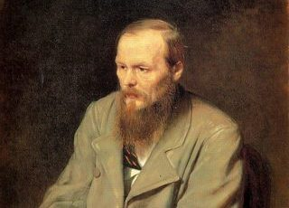

Портрет Ф.М. Достоевского
Самый известный портрет Федора Михайловича Достоевского.
В 70-е гг. XIX века меценат Павел Третьяков заказывал портреты лидеров русской культуры. Портрет Ф.М. Достоевского был заказан Василию Перову.
Для написания портрета художник в мае 1872 года специально приехал в Санкт-Петербург.
Ф.М. Достоевскому в период написания портрета был 51 год.
Для потомков данный портрет стал главным источником визуального представления о великом писателе.
Оригинал картины хранится в Третьяковской галерее.